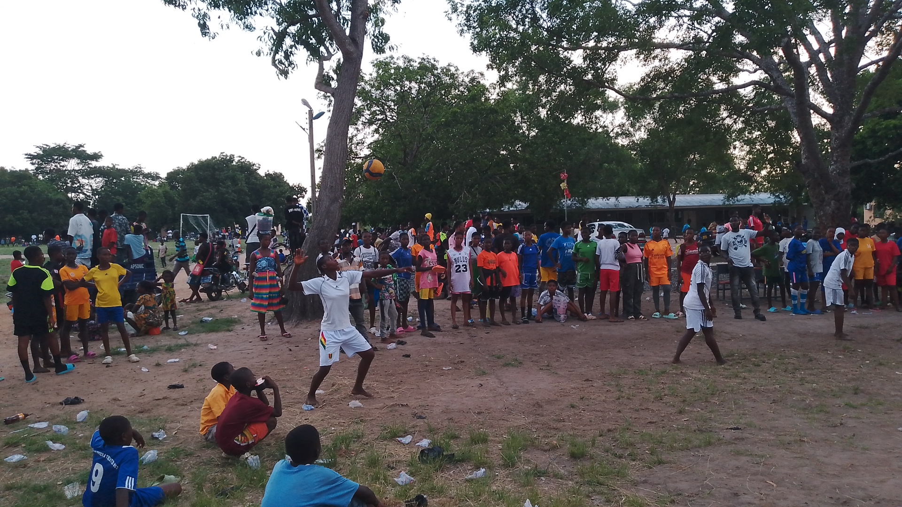
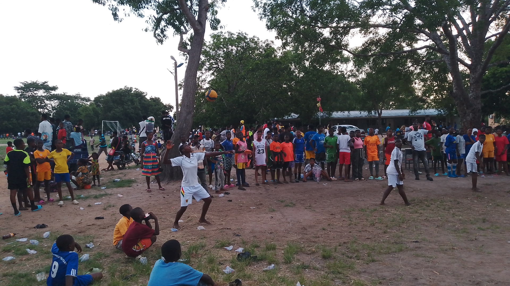

Here are some of the sports and athletics events that we have:
Interschools Games and Athletics.
Our students have shown exceptional talent and dedication in the field of sports and athletics. Some of their notable achievements include:
- Winning the district football tournament for three consecutive years.
- The top spot in the district-level athletics, winning the 100 meters race for two consecutive years.
- Producing several students who represent the circuit, district and regional teams in various sports.


 We are proud of their achievements and look forward to many more exciting events in the future.
Our students' hard work and teamwork have earned them a reputation as a force to be reckoned with in the world of sports.

We are proud of their achievements and look forward to many more exciting events in the future.
Our students' hard work and teamwork have earned them a reputation as a force to be reckoned with in the world of sports.
